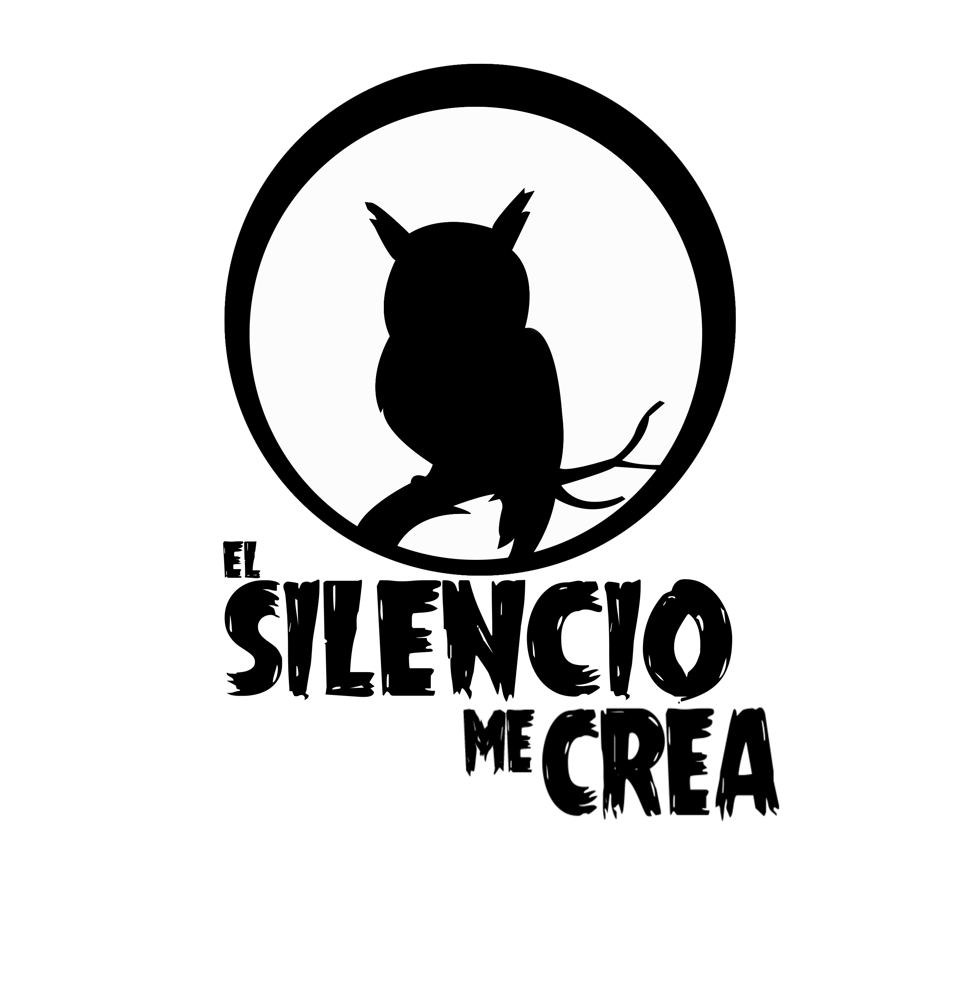

El silencio me crea
El silencio me crea es un cuento animado en 2d el cual relata la historia de andy un pequeño bùho que sufre una discapacidad auditiva por lo que le hacen mucho bullying, èl habita el bosque en compañia de su amigo thomas. Con este cuento se generará un mensaje de inclusión social con cada uno de ustedes y asì sean mas concientes del trato hacia la personas que sufren dicha discapaciad.